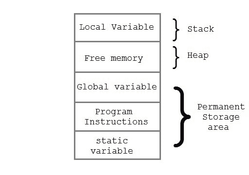

C 语言中的动态内存分配
原文：https://www.studytonight.com/c/dynamic-memory-allocation-in-c.php
运行时分配内存的过程称为动态内存分配。被称为内存管理功能的库例程用于在程序执行期间分配和释放内存。这些函数在 stdlib.h 头文件中定义。
| 功能 | 描述 |
| malloc() | 分配请求的字节大小，并返回指向分配空间的第一个字节的 void 指针 |
| calloc() | 为元质数组分配空间，将它们初始化为零，然后返回指向内存的 void 指针 |
| free | 释放以前分配的内存 |
| realloc | 修改以前分配的空间大小 |
内存分配过程
全局变量、static变量和程序指令在永久存储区获得内存，而局部变量存储在名为栈的存储区。
这两个区域之间的内存空间称为堆区域。该区域用于程序执行期间的动态内存分配。堆的大小不断变化。

分配内存块
malloc()函数用于在运行时分配内存块。该函数保留给定大小的内存块，并返回类型为void的指针。这意味着我们可以使用类型转换将它分配给任何类型的指针。如果它未能按照指定分配足够的空间，它将返回一个NULL指针。
语法:
void* malloc(byte-size)
举例时间:malloc()
int *x;
x = (int*)malloc(50 * sizeof(int)); //memory space allocated to variable x
free(x); //releases the memory allocated to variable x
calloc()是另一个内存分配函数，用于在运行时分配内存。calloc函数通常用于为派生数据类型分配内存，如数组和 结构。如果未能按规定分配足够的空间，则返回一个NULL 指针。
语法:
void *calloc(number of items, element-size)
举例时间:卡洛克()
struct employee
{
char *name;
int salary;
};
typedef struct employee emp;
emp *e1;
e1 = (emp*)calloc(30,sizeof(emp));
realloc()改变已经动态分配给变量的内存大小。
语法:
void* realloc(pointer, new-size)
一个例子的时间:realloc()
int *x;
x = (int*)malloc(50 * sizeof(int));
x = (int*)realloc(x,100); //allocated a new memory to variable x
malloc()和calloc()的区别
| 卡洛克（） | malloc() |
|---|---|
| calloc()用 0 值初始化分配的内存。 | malloc()用垃圾值初始化分配的内存。 |
| 参数数量为 2 | 参数数量为 1 |
| 语法:(casttype *)calloc(blocks，size of _ block)； | 语法:(cast type *)malloc(Size in _ bytes)； |
表示动态内存分配的程序(使用 calloc())
#include <stdio.h>
#include <stdlib.h>
int main()
{
int i, n;
int *element;
printf("Enter total number of elements: ");
scanf("%d", &n);
/*
returns a void pointer(which is type-casted to int*)
pointing to the first block of the allocated space
*/
element = (int*) calloc(n,sizeof(int));
/*
If it fails to allocate enough space as specified,
it returns a NULL pointer.
*/
if(element == NULL)
{
printf("Error.Not enough space available");
exit(0);
}
for(i = 0; i < n; i++)
{
/*
storing elements from the user
in the allocated space
*/
scanf("%d", element+i);
}
for(i = 1; i < n; i++)
{
if(*element > *(element+i))
{
*element = *(element+i);
}
}
printf("Smallest element is %d", *element);
return 0;
}
输入元素总数:5 4 2 1 5 3 最小元素为 1